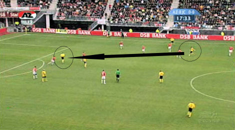

|
AZ
- Roda JC (2-2) 31 december 2006
|
De laatste wedstrijd van het jaar, voor het eerst in het DSB-stadion.
AZ valt aan en Roda countert. Hier een duel van Ramzi met De Zeeuw.
Scrimmage voor het Roda-doel. Dembele maakt hands wat niet gezien wordt.
Lachambre krijgt een duw van Martens en knalt vervolgens op Ramzi.
Roda moet hierdoor even verder met tien man.

Prima voorzet op Van Tornhout die de bal prachtig aanneemt en scoort, echter uit
buitenspelsituatie.
Een zeer verre uittrap van Castro bereikt Oper die niet afdoende verdedigd wordt
door Opdam.
Oper lobt de bal perfect over Waterreus: 0-1, (23').
Oper blij!
Uitbraak Ramzi die echter door Jaliens van de bal wordt gehouden.
Koevermans schiet vrij voor doel over.
In de tweede helft gaat de aanvalsmachine van AZ door. Op aangeven van De Cler
schiet Dembeler hier vlak naast de paal.
Na een hoekschop ontstaat er een rommelige situatie voor het doel. De bal
belandt via een buitenspeler in de zestien voor de voeten van Opdam die de
gelijkmaker inschiet: 1-1, (65').
Eerst poortert Oper De Cler.
Daarna een kaats met Ramzi, een schot: 1-2, (67').
Een mirakel: Van Tornhout heeft alles en iedereen achter zich. Hij hoeft de bal
maar in te schieten, maar hij laat zich achterhalen door zijn achtervolger die
nog
net op tijd kan opruimen.

Ramzi breekt uit en speelt de bal op de vragende Cissé die vrij voor de keeper
komt maar deze niet weet te omspelen.
Na een tweede (zeer domme) gele kaart kan Oper met rood inrukken.
Kah, die geschorst op de tribune zit, houdt het niet meer van de spanning na
weer
een goede kans van AZ.
Een voorzet van Opdam bereikt Koevermans die de bal het dak injaagt: 2-2, (83').
© Koempels Pleasure Dome
|